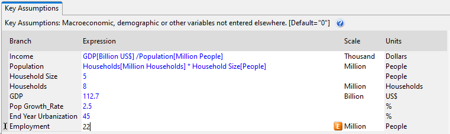
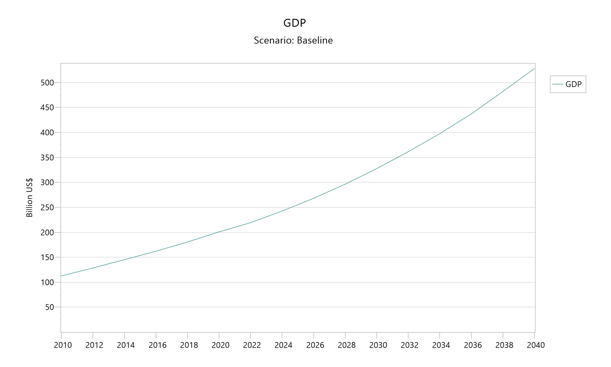
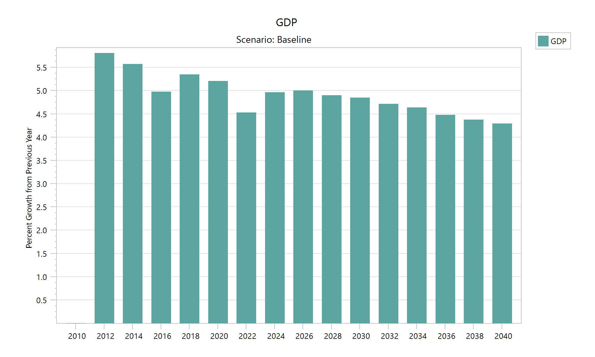
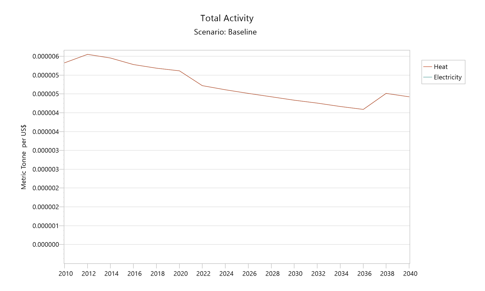
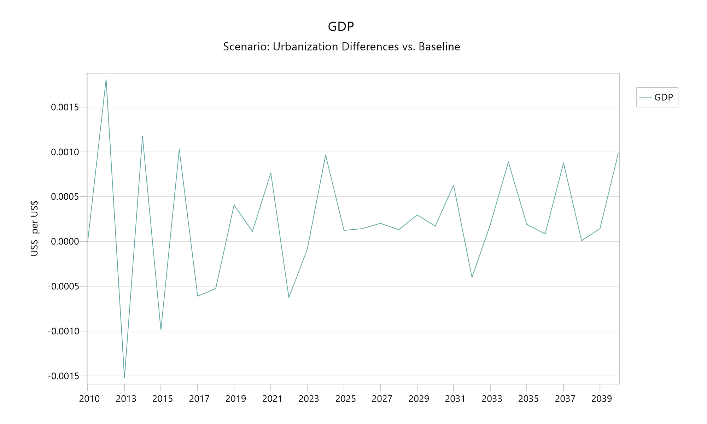

LEAP exercise
In this exercise you are going to add a macroeconomic model to LEAP using the LEAP-Macro module. First, you will run a set of macroeconomic scenarios. Then, you will introduce investment costs and run a set of alternative investment scenarios.
Make sure you start with a data set that has all of the data entry completed through LEAP Exercise 3.
For this exercise, you must have a licensed version of LEAP: see the LEAP website for details. Registered users can find additional exercises on the LEAP website. You must also install LEAP-Macro. To make sure the installation was successful, it is best to follow the Quick Start instructions before running this exercise.
Getting ready
There are a few preparatory steps required before modifying the Freedonia LEAP area.
Prepare the Freedonia area
First, open the Freedonia area and revert to version 3.6.0: More Transformation. Then, save your changes, close LEAP, and keep it closed during the next steps.

Move the Freedonia LEAP-Macro files to the LEAP Areas folder
As explained under Quick Start, a full Macro model for the Freedonia LEAP area is available in a zip file called Macro.zip. Unzip the file and save the contents in a new sub-folder within the Freedonia LEAP Areas folder, following these steps:
- Copy Macro.zip into the
LEAP Areas\Freedoniafolder - Unzip the files into a folder called
Macro
Normally the LEAP Areas folder is located in your Windows user’s Documents folder. To verify the location on your computer, open LEAP and look in Settings > Folders > Areas.

Modifying LEAP
The next steps involve modifying LEAP so that it can interface with the Macro model. Not many changes are needed, and all of them are in Key Assumptions.
First, start LEAP. Next, in Analysis View, open the Key Assumptions branch and change to Current Accounts:

Entering GDP and calculating income
In the current implementation, the Key Assumption “Income” is input data, while “GDP” is calculated. However, the Macro model will calculate an index for GDP, so you will need to reverse this.[1]
To determine an appropriate value for GDP, open the supply and use table file and look for total value added, because that is equal to GDP. It is easiest to do that using Excel’s “freeze panes” feature. For this file, total value added is in cell X36, and is equal to 112706. The values in this file are in millions of US$, while the GDP entered in LEAP is in billions of US$. So, dividing this value by 1000 gives 112.7 billion US$.

So, for the first change, enter 112.7 into Key Assumption “GDP” and save the LEAP area:

Next, calculate Income as GDP divided by population:

Also remove the expression for Income in the Baseline scenario, so that it will default to the Current Accounts expression:

Finally, because the “Income Growth_Rate” Key Assumption is no longer used, you can delete it:

Changing the population growth rate
In the standard Freedonia model, population growth is steady across the entire scenario. More realistically, population growth can be expected to slow as incomes increase. To allow for a changing population growth rate, enter the following into the Baseline scenario for the “Pop Growth_Rate” Key Assumption:
InterpFSY(2015, 2.55, 2020, 2.50, 2025, 2.41, 2030, 2.28, 2035, 2.16, 2040, 2.03)
Adding Employment to Key Assumptions
Macro calculates an index for employment. It is not necessary to read that into LEAP, since it is not used in any LEAP calculations. However, it is an interesting policy variable, so go ahead and add it to the Freedonia model:

Enter a value of 22 million people for Current Accounts:

Adding investment costs
In the configuration file for Macro, the sectors Coal Mining (scoal), Petroleum and Natural Gas (spetr) and Electricity, Water, and Sewage (s_util) are excluded from the calculations, on the understanding that they are tracked in LEAP. That means that Macro will not estimate investment expenditure for those sectors, which can be an important source of demand, which affects economic output and energy demand. When energy-related investment costs are included in the model, they are collected and added to total investment demand in the Macro model. LEAP and Macro are run iteratively to convergence.
To add investment costs, first switch on costing by going to the Scope & Scale tab of the Settings screen and enable Costs. The Costs tab will become active. The settings on the Costs tab do not affect the link to the Macro model, so you can close the dialog.
Make sure you are in Current Accounts. Then, go to the “Transformation\Electricity Generation\Processes” branch and select the Capital Cost variable. Relevant values are in the table below. Make sure that the units are either US$/kW or, equivalently, 1000 US$/MW.
| Type of plant | Capital cost ($/kW) |
|---|---|
| Existing Plants | |
| Existing Coal Steam | 1000 |
| Existing Hydro | 2000 |
| Existing Oil Combustion Turbine | 400 |
| New Plants | |
| New Coal Steam | 1000 |
| New Oil Combustion Turbine | 400 |
Running LEAP-Macro
LEAP-Macro can be run using a Visual Basic script that is provided with the sample files. Go into the LEAP Areas\Freedonia\Macro folder and open the LEAP Areas\Freedonia\Macro\scripts folder. Copy the LEAPMacro_MacroModelCalc.vbs file from that folder into the main Freedonia LEAP area folder.
Before running the file, edit the configuration file LEAPMacro_params.yml to set the parameter run_leap to true:
model:
# Set run_leap to "false" to do a single run of the Macro model without calling LEAP
run_leap: true
# Hide LEAP while running to (possibly) improve performance
hide_leap: false
# Maximum number of iterations before stopping (ignored if run_leap = false)
max_runs: 7
# Tolerance in percentage difference between values for indices between runs
max_tolerance: 1.0 # percentIf you copied the Visual Basic script correctly, then it should be accessible from the Advanced > Run Area Script menu. Select it and run it. You may need to give LEAP permission to run the script.

After a delay while the program loads, it will begin running the model. It may do multiple runs: 
Examining the results
Change to the Results view in LEAP, and look at the results for the Key\GDP branch. They should now reflect the index calculated by the Macro model.

To get a better idea of how GDP is changing, click on “More…” and select “Growth Rates” rather than absolute values. The results show that the growth rate calculated by the Macro model starts high and then gradually declines. There is a slight drop after 2020, because the global GDP trajectory specified in the input files, which is a driver of export demand, takes into account the impact of COVID-19.
The initial target growth rate in the configuration file was set to 6%/year, the same as the assumption in the original Freedonia model, and GDP growth stays near that level. However, due to internal model dynamics and some demand constraints, it stays below that level, and in fact declines less than 5%/year by the end of the scenario.

Other results are passed to LEAP as well, including an index of industrial activity. To see it, go to the Results View and select the Demand\Industry\Iron and Steel branch. Change the displayed variable from Activity Level to Total Activity, and select “Absolute Values” instead of “Growth Rates” in the box above the chart. Next, click on the “Denominator…” button and select GDP. The results show that the Iron and Steel sector generally grows more slowly than GDP, reflected in the downward slope of the line.

To see more of the results, open the LEAP Areas\Freedonia\Macro folder under the Freedonia LEAP area. There you will find all of the output files produced by the Macro model.
Changing urbanization: A new scenario
With a few modifications, the LEAP-Macro model can be used to compare different scenarios. For this example, you will change the urbanization assumption in Freedonia. Urban households use electricity at a different rate than do rural households, so changing the urbanization assumption will change household electricity demand.
To create the new scenario, go to the Scenarios screen in LEAP and create a new scenario below the Baseline scenario called “Urbanization”.

Close the Scenarios screen, and change to the Urbanization scenario. Then, go to the Demand\Household\Urban branch and alter the expression in the Activity Level variable to read
Interp(2040, 60)With this assumption, the urbanization rate will rise to 60% by the end of the scenario, rather than the Baseline value of 45%.
Next, make a copy of the configuration file and rename it to LEAPMacro_params_URB.yml. In the new file, make three changes:
First, name a new output folder for this scenario, “Urbanization”:
#---------------------------------------------------------------------------
# Folder inside the "outputs" folder to store calibration, results, and diagnostics
#---------------------------------------------------------------------------
output_folder: UrbanizationSecond, change the LEAP scenario to “Urbanization”:
#---------------------------------------------------------------------------
# Parameters for running LEAP with the Macro model (LEAP-Macro)
#---------------------------------------------------------------------------
# Core information for the LEAP application (optional)
LEAP-info:
# The last historical year (equal to LEAP's First Scenario Year - 1): if missing, it is set equal to the start year
last_historical_year: 2010
# This can be, e.g., a baseline scenario (alternatively, can specify input_scenario and result_scenario separately)
scenario: Urbanization
# The region (if any -- can omit, or enter a "~", meaning no value)
region: ~Third, edit the LEAP-Macro-run.jl file that you will find in the Macro folder and add the lines below:
using LEAPMacro
curr_working_dir = pwd()
cd(@__DIR__)
println("Running Baseline...")
LEAPMacro.run()
# Add these lines:
println("\nRunning Urbanization...")
LEAPMacro.run("LEAPMacro_params_URB.yml")
cd(curr_working_dir)Then run the script again. It will go through both scenarios. 
To see the effect of changed urbanization assumption, in the Results View, select the GDP variable (Key\GDP), set the scenario selection to Urbanization, and set the comparison to “Differences vs. Baseline.” To see the year-on-year variation, change the default graph setting from “Every 2 years” to “All”: 
Higher electricity demand leads to higher investment. Going to the Transformation\Electricity Generation\Processes branch, selecting the Investment Costs variable, and showing “Cumulative Values” shows how energy-related investment expenditure is higher over the Urbanization scenario than in the Baseline scenario. 
Investment is a source of economic demand, and in this demand-led model, higher investment expenditure translates into higher GDP by the end of the scenario. That is not guaranteed – if the economy is operating at full potential, additional investment can “crowd out” other economic activity. But in this case, the investment has a stimulating effect.
That said, the differences are not large. Setting the denominator on the graph to “GDP” shows that the differences are generally less than a tenth of a percent of GDP. 
Once a model is running well, it is often useful to stop reporting diagnostics by setting the configuration file parameter diagnostics to false and to speed up calculations by setting the parameter hide_leap to true. Now the model is ready for regular use.
- 1Actually, Macro calculates value added in non-energy sectors, since LEAP is taking care of the energy sectors. An index of total non-energy value added is used as a proxy for an index of GDP growth.